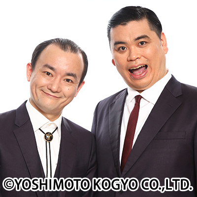
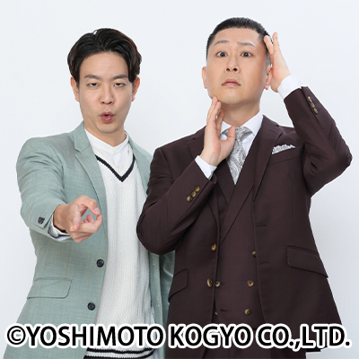
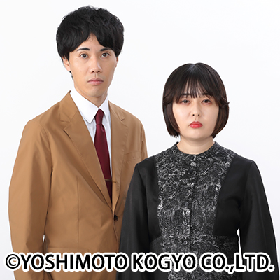

ななまがり
2008年11月結成した森下直人さんと初瀬悠太さんのお笑いコンビ。
THE SECOND 2024 ファイナリストであるほか、TBS「水曜日のダウンタウン」の大企画、「新元号当てるまで脱出できない生活」に出演し、テレビやラジオ番組の関係者に贈られる「ギャラクシー賞2019年5月度月間賞」を受賞するなど、漫才やコント以外にも幅広くその才能を発揮している。

ドンデコルテ
2019年11月結成。小橋共作さんと渡辺銀次さんのお笑いコンビ。
2025年第21回M-1グランプリ準優勝の経歴を持つほか、YouTubeの総再生回数は300万回を超えている。また、お互いピンとしても活躍しており、小橋共作さんは2022年R-1グランプリ準々決勝進出。渡辺銀次さんは2025年R-1グランプリ準々決勝進出などコンビでもピンでも活躍している。

シンクロニシティ
2017年7月結成。西野諒太郎さんとよしおかさんのお笑いコンビ。
今話題の大学お笑いの出身コンビであり、卒業後2022年までは社会人と両立しながらお笑い芸人をしていた。2025年第21回M-1グランプリ、2025年第18回キングオブコントでともに準々決勝進出。劇場ライブでも引っ張りだこなど今注目のコンビ。
開催日時・場所
| 日時 | 5月24日(日) 14:00〜14:45 |
|---|---|
| 会場 | 2号館前ステージ（雨天時：1号館2階S201番教室） |
| 料金 | 無料 |
注意事項
13:30〜ライブ終了まで2号館1階グローバルプラザを閉館いたします。
- ※撮影・録音は禁止です。
- ※当日は、スタッフが巡回しております。スタッフの指示には従うようにお願いいたします。